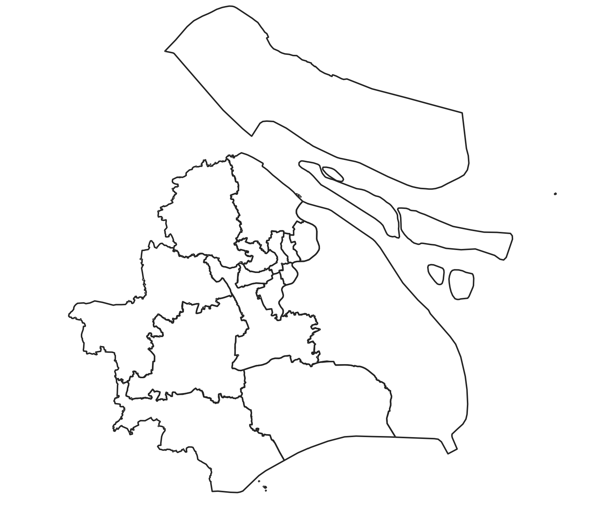
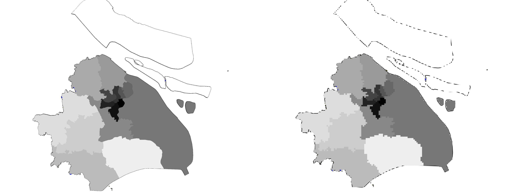
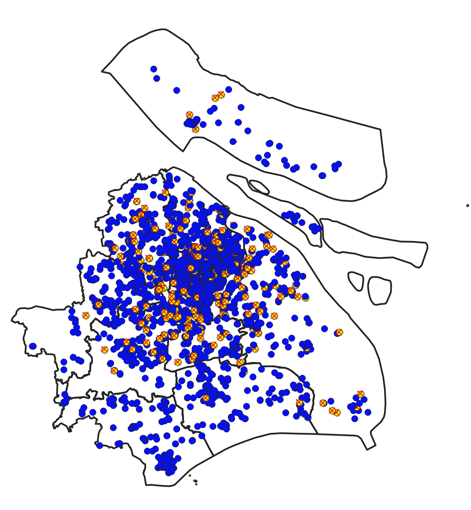

Lab 04 · October 2026
Raster and Vector
The question
How much of Shanghai is Putuo?
The data
I used a vectorized map of the districts, particularly a geojson of the administrative districts. Each one was given an ID to help identify it. The file was named LAB04_shanghai-districts.geojson. An additional file, based on a survey done at NYU Shanghai, was also provided in a csv titled LAB04_shanghai-lockdown-survey.csv which dealt with statistics about the mental health in households in the Shanghai area during the pandemic along with their addresses. The second file had the same ID values for administrative districts and had longitude and latitude, so they were used alongside the vectorized districts. However, the addresses were often blank (553/3763) or deleted to protect identifying information. The vector boundary also had no license.
The method
Throughout this project, we worked in EPSG:32651 as the CRS. The extent used for rasterization in each case was 295000, 430000, 3393000, 3528000 [EPSG:32651], all measurements were made using QGIS 3.4, and rasterization was done using QGIS 3.4 with Georeferenced units. The rasterization was done at four different cell sizes: 1km by 1km, 250m by 250m,100m by 100m, and 30m by 30m. Each outputted a .tif file with Bytes as the output data type. Rasterized areas were then computed by multiplying the amount of pixel cells belonging to each district by the size of each pixel cell, and these were compared to areas computed directly from the vectorized boundaries.



What I found
Areas measured planar in EPSG:32651 (WGS 84 / UTM 51N),which departs from the ellipsoidal area by under 0.03 per cent at this latitude. Gridded areas were computed by cell count on a 30 m grid with origin 295000, 3528000; shifting that origin by half a cell moves a small district by several per cent, so gridded figures are reported to no better than the nearest per cent.
The findings show that Putuo is about 55.54km² in area, as measured using the raster image with 30m by 30m cells and the vectorized map of the districts. Both agree to two decimal places in this regard, so I would publish this figure. I would not use any more coarse raster measurements, as the difference between the raster and vectorized measurements begins to climb all the way to 5% at the 1km by 1km cell size grid. This amounts to approximately 1% of Shanghai’s total area, as computed through the raster image with 30m by 30m cells. There are a few important caveats, as can be seen in the section below.
What this does not show
As shown in figure 4, many of the respondents(~8.8%) did not have comparable longitude and latitudes for their district compared to the vectorized boundaries, and approximately 16.5% of respondents had no coordinates at all. Furthermore, the vectorized boundary was with ~600m resolution, so edges below that scale would not be visible.
AI use: No AI tools were used for this entry.
Reflection
If I had to pick one number for the area of Putou, I would pick the vectorized area as taken in the EPSG:32651 frame. This is because it loses the least detail to sharp boundaries, and we have seen in prior labs that sharper boundaries may increase perimeter significantly but area tends not to be affected as much as resolution scales.
For this data, I would rank the projection as the largest source of disagreement as the Web-Mercator projection produces quite a lot of error at ~37%, followed by the origin position which can cause a ~7% swing, then the cell size at about 5% and finally the vector layer’s resolution at less than a percent. One factor not listed is the possibility that the districts cover significant amounts of river, which can skew the amount of dry area.
It seems that Qingpu has the most misrepresented people in the survey, as it seems to be the most common district without longitude and latitude values for the survey recipients and so its population would be undercounted. This could cause less funding to be allocated for mental health services, which may disadvantage its population.